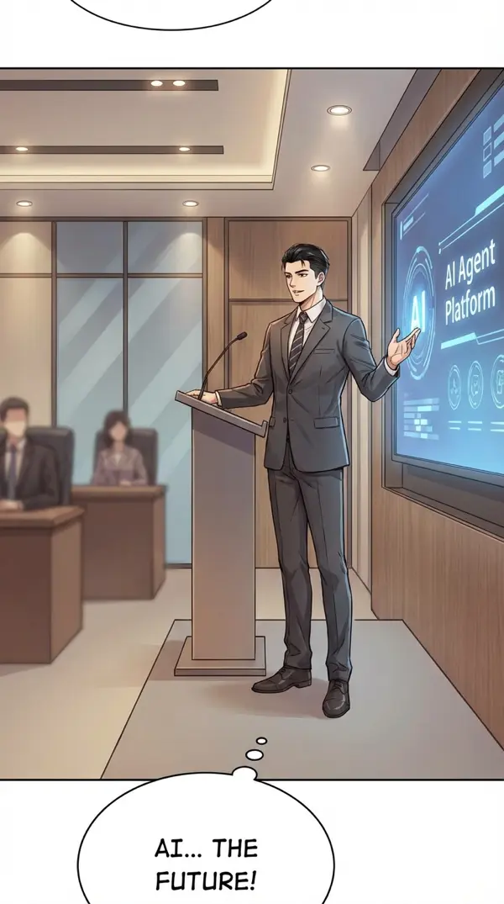
"神经元科技，下一代AI Agent平台。"
我站在投资人面前，PPT投在身后的屏幕上。深灰西装，条纹领带，整理了三次的头发。一切看起来就是一个标准的B轮创业者——努力表现得成熟但不至于油腻。
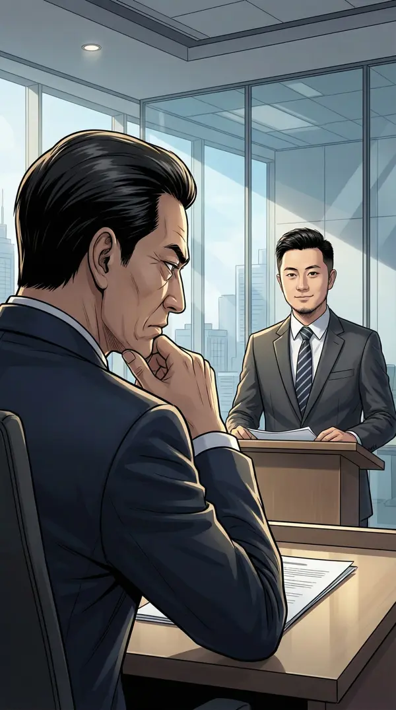
"你们的技术壁垒在哪？我上周看了三个做同样东西的团队。"
这种压力，比当年在零下30度的雪地里潜伏三天轻松多了。至少这里有暖气，对面的人不会开枪，最多只是不投钱——说实话，有时候不投钱比开枪更让人难受。
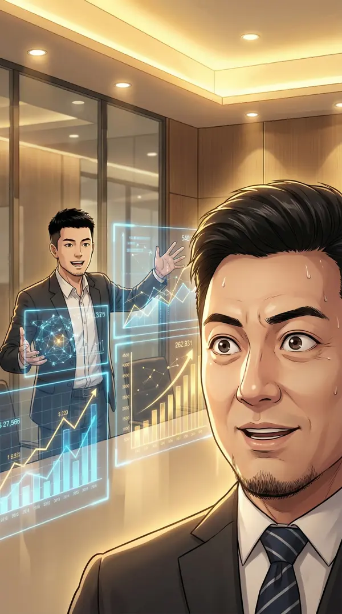
我微微一笑，用一个精准的技术类比瞬间击中要害——把我们的Agent架构比作神经突触的自组织网络，其他团队做的是条件反射，我们做的是真正的思考。
投资人的表情从"又是一个PPT创业"变成了"等等，这小子好像真懂"。战术上管这叫"精确打击"——一发入魂，不浪费弹药。
路演结束。我走出会议室，掏出手机，给林悦发消息。
"对方说要internal discussion。翻译一下就是——'我们回去假装商量一下然后告诉你我们其实五分钟前就决定投了'。"
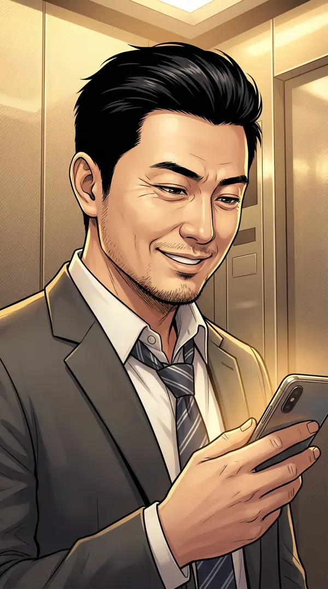
"你的自信从哪来的，是不是以前卖过保险？"
我笑着锁屏。保险倒是没卖过。我以前卖的是……国家安全。折扣力度比保险大多了——买一送命那种。
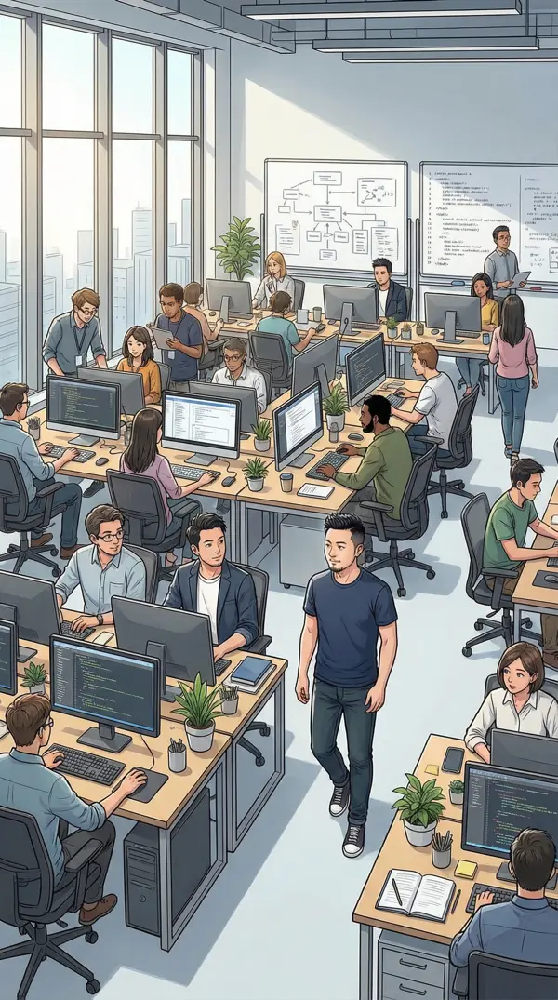
回到公司。开放式办公区，二十来号人各自忙碌。我换上了藏青色T恤和牛仔裤——这才是我的战斗服。西装是伪装，T恤才是本体。
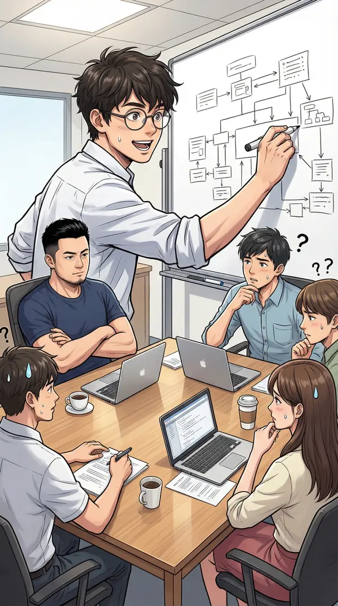
产品讨论会。一个年轻工程师站在白板前，画着一个看似疯狂的架构图，眼睛里冒光。其他人面面相觑。
这小子的直觉不错。有点像当年连队里那个新兵——所有人都觉得他疯了，结果他的方案救了全队。算了，不想了。
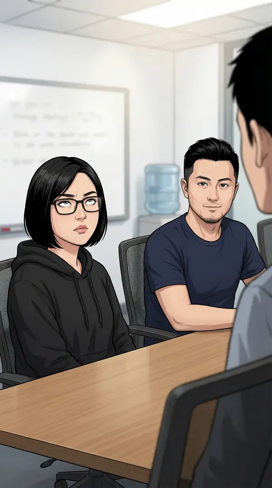
我拍板："就这么干。"
"又来了，老板的第六感决策法。"林悦翻了个白眼，但嘴角在抽搐——她知道我第六感的胜率是83%。
严格来说这是第七感。第六感我留着对付更危险的事情。
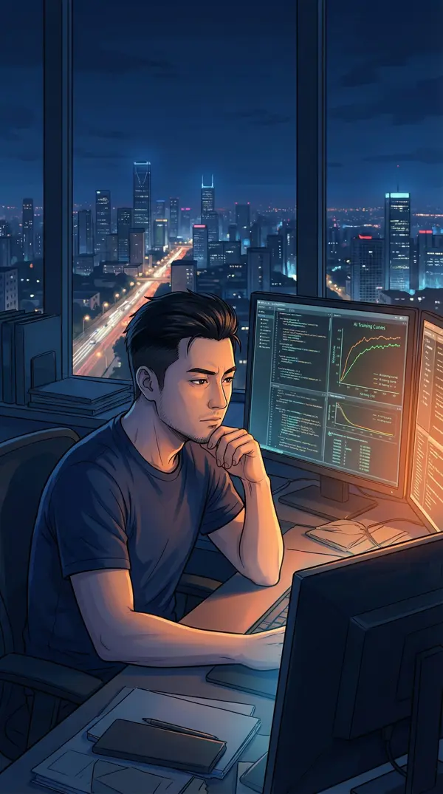
下班后，办公室只剩我一个人。屏幕上AI训练曲线缓缓上升。窗外，整座城市的灯火铺展到天际线。
此刻，我只是一个普通的创业者。盯着loss曲线下降的幅度，比当年盯着狙击镜里目标的移动轨迹，让我安心得多。
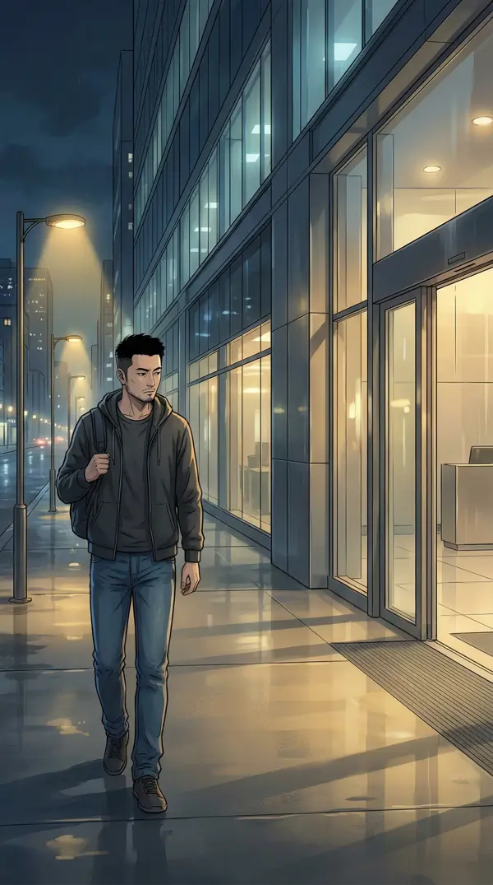
凌晨一点。我走出写字楼大堂，街上几乎没人。灰色卫衣，牛仔裤，双肩包——标准程序员下班配置。
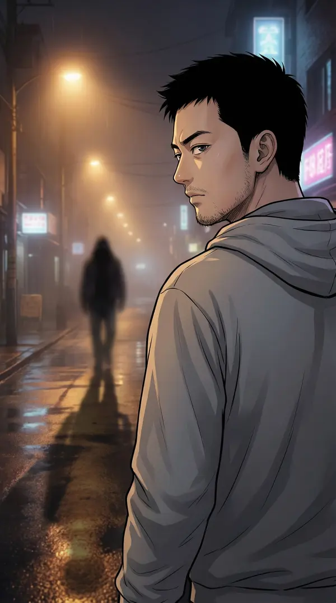
走了三个路口。
身后300米，有个人跟了两个弯。普通人不会注意——但我的本能从未消退。就像骑自行车，学会了就忘不掉。只不过我学的不是骑车，是识别致命威胁。
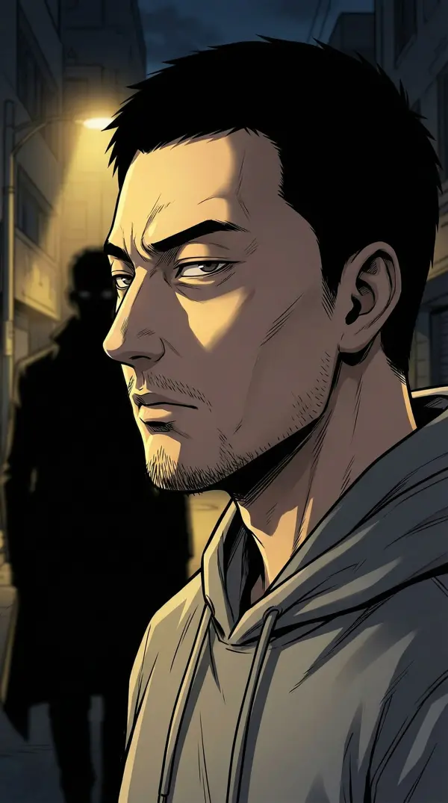
跟踪者的步频和我保持同步调整——受过基础训练，但不专业。步幅不稳定，转弯时犹豫了0.3秒。像是……私家侦探级别。不是军方的。军方的人跟我，我可能第四个路口才会发现。
这个跟踪者的战术素养，大概相当于我见过最差的投资人——完全不懂隐蔽自己的意图。
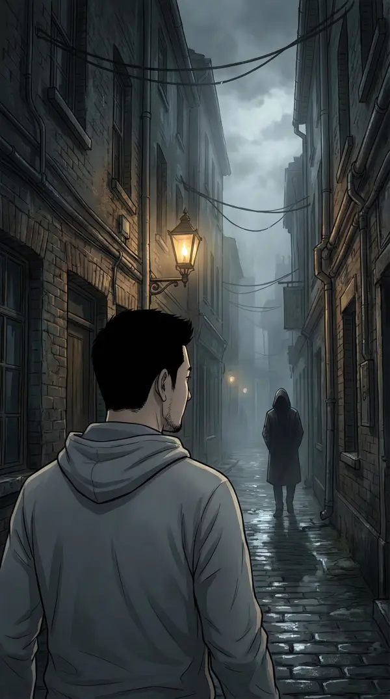
我故意拐进一条窄巷。两侧老楼，管道纵横，灯光昏暗。
经典诱敌深入。创业术语叫"漏斗转化"——把目标引导到你控制的环境里。
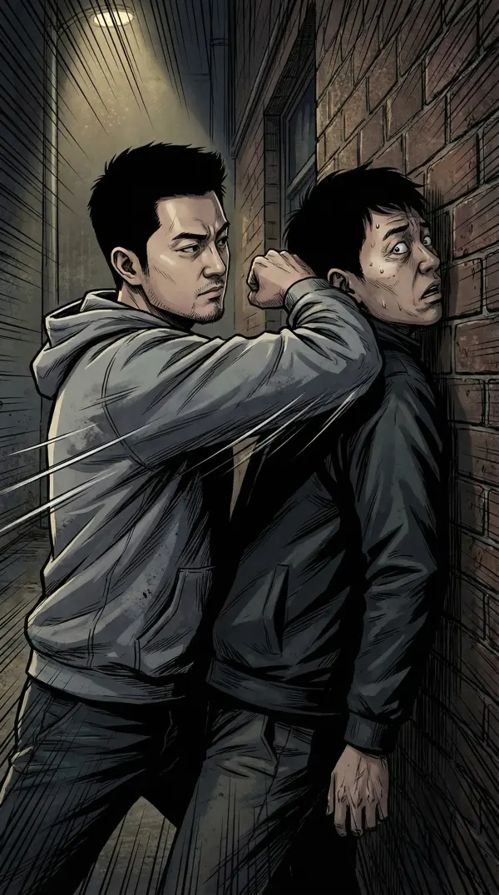
三秒。
跟踪者被我从背后锁住脖子压在墙上。整个动作流畅得像呼吸一样自然。
我自己都有点惊讶——果然，有些东西是刻在肌肉记忆里的。五年不碰，手感还是丝滑。就像五年没写代码的程序员，打开IDE的瞬间手指自动飞起来。
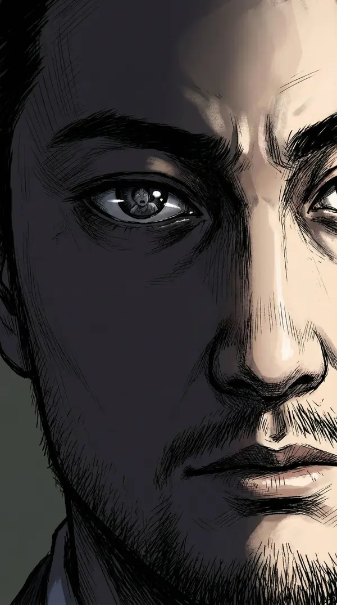
那一瞬间，我感觉到了切换——从温和的创业者CEO，变成了冰冷精准的"幽灵"。
只持续了两秒。但这两秒足以让对方感受到——面前的不是一个普通的程序员。
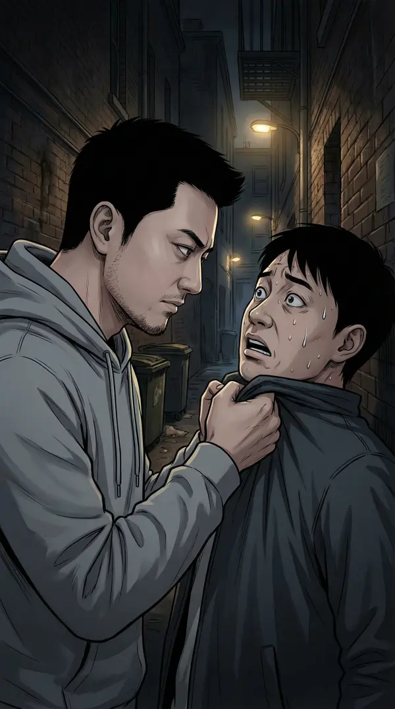
"我……我只是受人委托调查……"
我松开了一点力度，但没有放手。
"谁委托你的？"
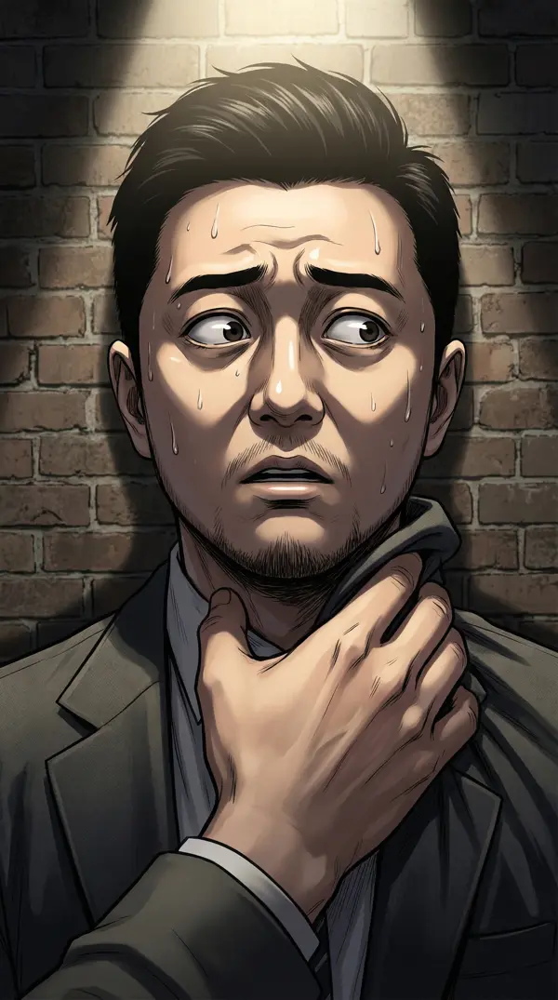
"一个姓赵的……赵总……天枢科技……他说只是背景调查，做尽职调查用的……"
天枢科技。赵总。我的竞争对手，一个笑容可掬但城府极深的胖子。居然派人查我的底？商业竞争查背景可以理解，但派人跟踪——这个力度，有意思。
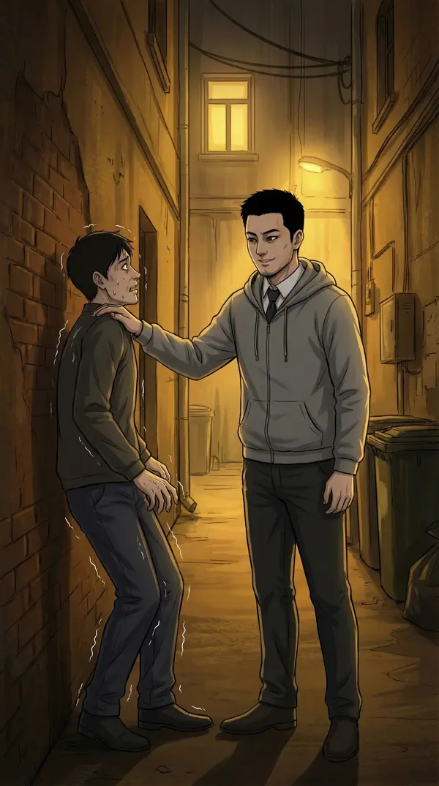
我放开他，拍了拍他的肩膀。动作很轻，像是老朋友打招呼。
"回去告诉赵总，想了解我，可以约喝咖啡。下次再跟踪——"
我顿了顿，笑了笑。
"就不是拍肩膀这么简单了。"
语气很温和。但跟踪者的腿在抖。
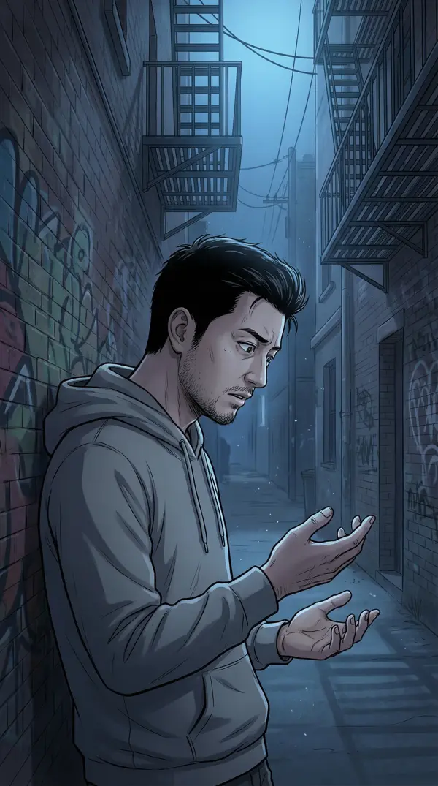
跟踪者跑远后，小巷恢复了安静。我靠在墙上，低头看着自己的手。
五年没碰过这些了。手没抖。心跳稳定在62。呼吸频率没有变化。
看来有些东西，退役退不掉。就像创业者的焦虑——你以为你放假了，其实你的大脑还在计算runway。
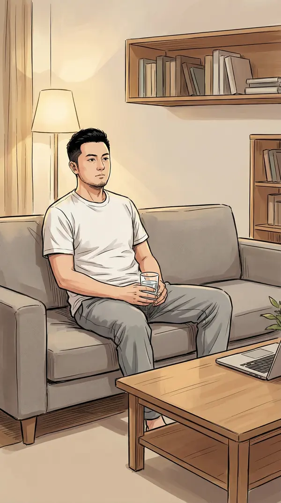
回到家。简约公寓，干净但不豪华。创业者没什么钱装修——所有现金流都在公司账上。
我倒了杯水，坐在沙发上。窗外的城市灯火比办公室看到的更近，也更安静。
手机震动。屏幕亮起一个号码——五年没联系过的号码。
我盯着屏幕看了三秒。在我的通讯录里，五年不联系的人只有两种：要么已经死了，要么和我一样，在努力假装过去不存在。
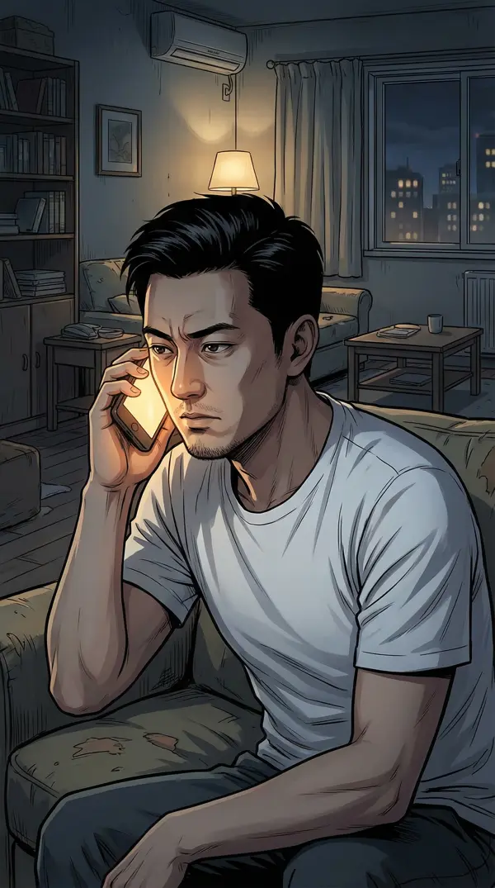
我接了起来。
"幽灵？"
老陈低沉的声音。五年没听到，但我一秒就认出来了。就像你永远记得战壕里身边那个人的呼吸声。
"这个名字已经不存在了。"
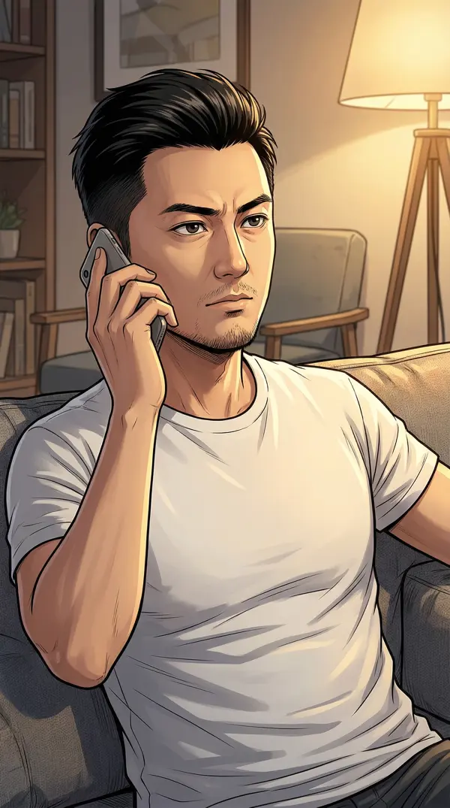
"有人在查暗影小组的档案。不是商业竞争那么简单。"
暗影小组。一个在任何公开记录里都不存在的名字。如果有人在查它——意味着某个本该永远封存的箱子，被人撬开了。
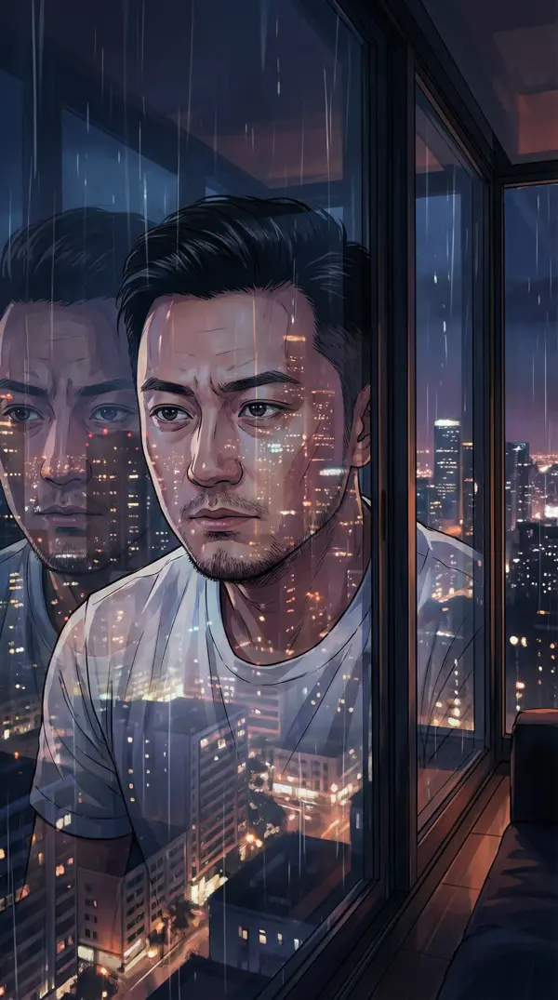
"明天下午三点。老地方。"
挂了电话。我走到窗前。城市夜景在玻璃上和我的脸重叠在一起——创业者的脸，战士的眼。
我以为创业是我的新战场。看来，旧战场还没结束。
也好。毕竟我的Agent平台还缺一个真正的压力测试场景——有什么比真实世界的情报战更好的测试环境呢？
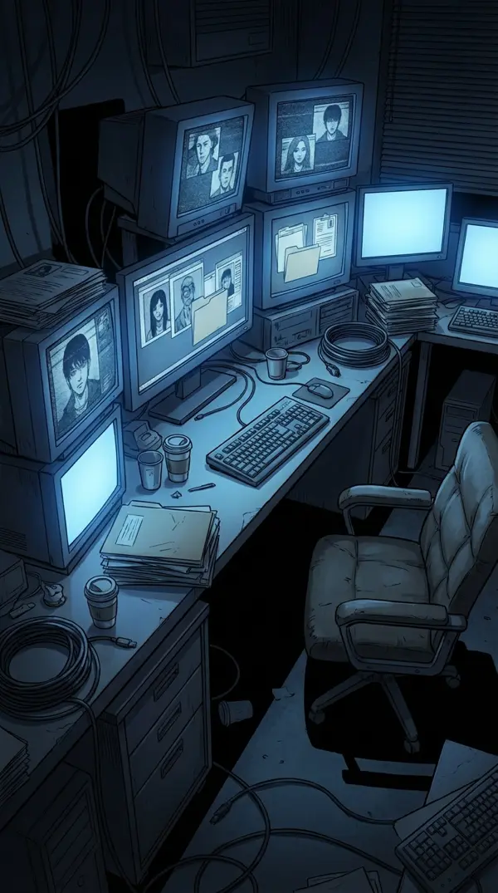
某处。一间没有窗户的房间。
多个屏幕亮着冷蓝色的光，上面是不同人的照片和资料档案。键盘旁边放着一杯已经凉了的咖啡。
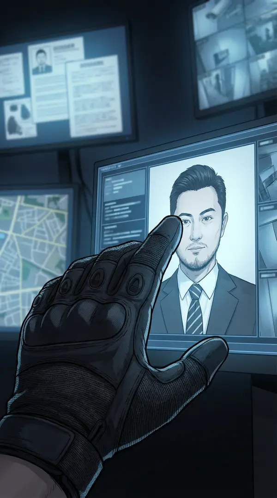
一只戴着黑色战术手套的手划过屏幕，停在一张照片上——照片上是一个穿西装的年轻男人，面带微笑，看起来就是一个普通的创业者。
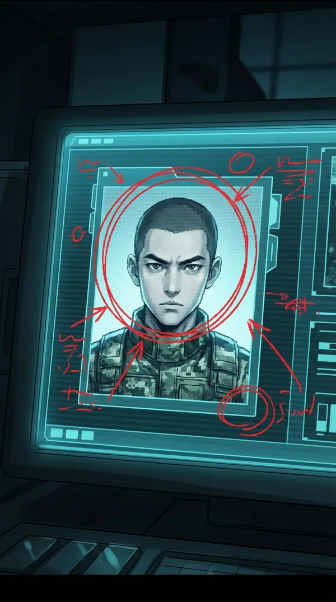
但在另一个屏幕上，同一张脸出现在一份完全不同的档案里——军装，短寸头，没有胡茬，眼神凌厉。
那是很多年前的他。或者说，那才是真正的他。
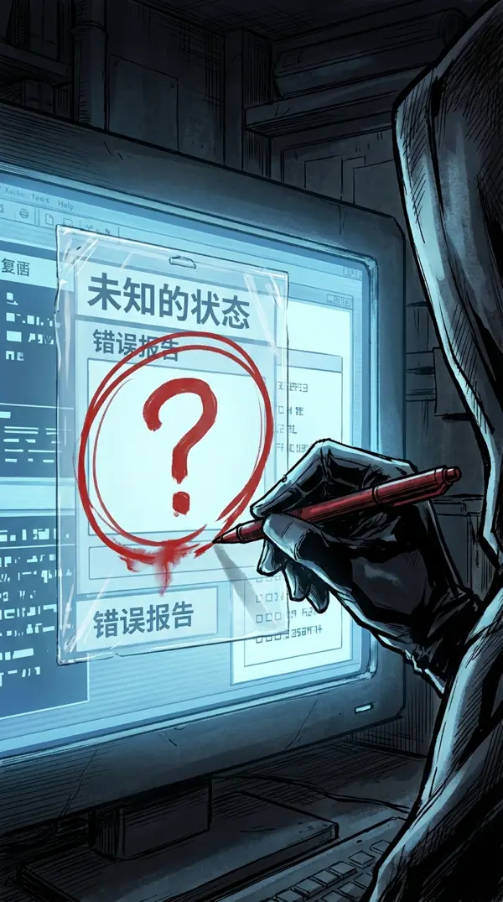
代号栏写着：幽灵——状态：退役？
问号被人用红笔重重圈了起来。